El minimalismo es una neutralidad importada. Aquí se construyó desde la necesidad, la mezcla y la improvisación: el color no es exceso, es vida, memoria e identidad.
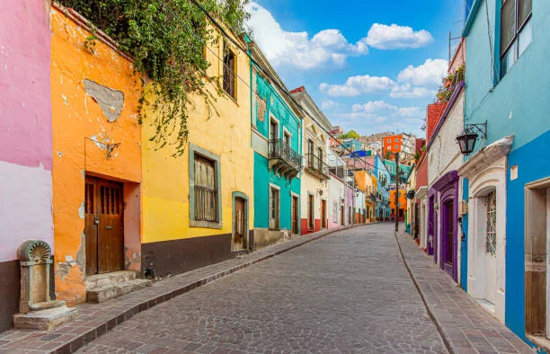
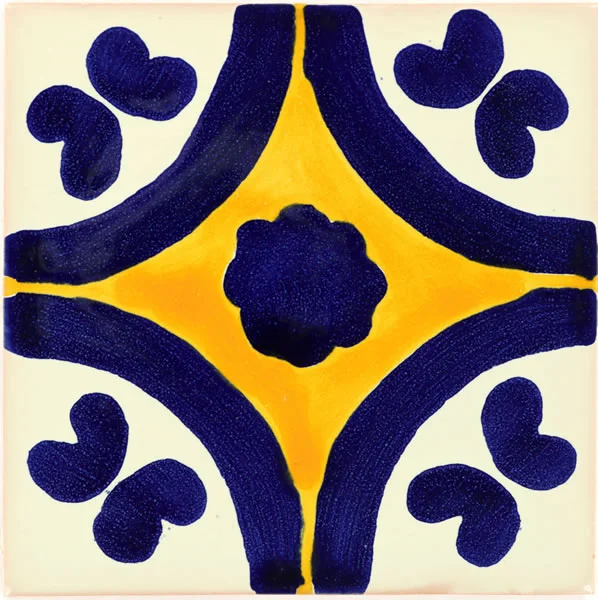
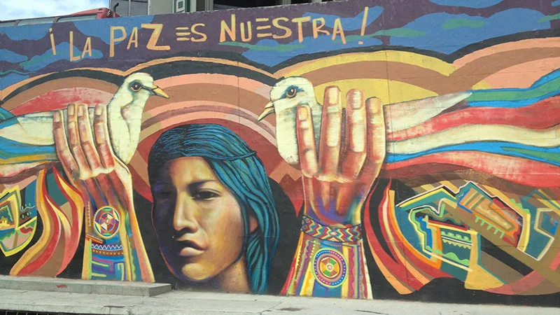
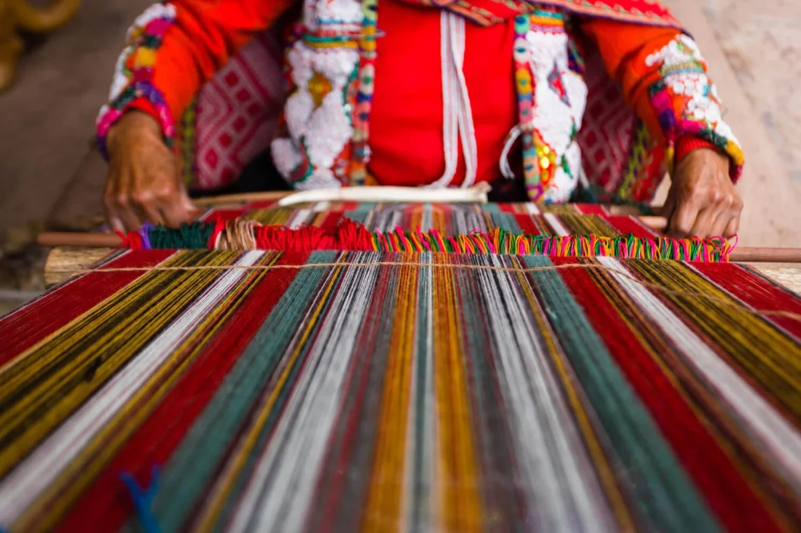
Muro exuberante amarrado por castillos y cadenas. El bloque de contenido se acumula —cada capa responde a algo real— pero una estructura fuerte lo mantiene legible. Así se construye esta página.
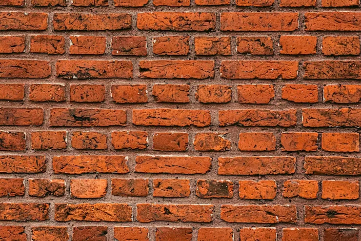
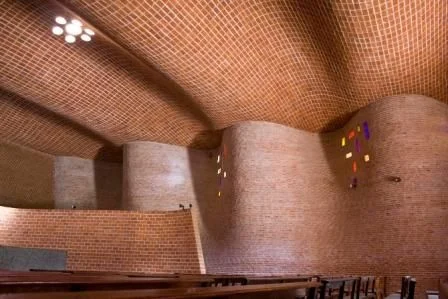
La varilla que sobresale no es un descuido
es un tiempo verbal: la casa que se conjuga en futuro.
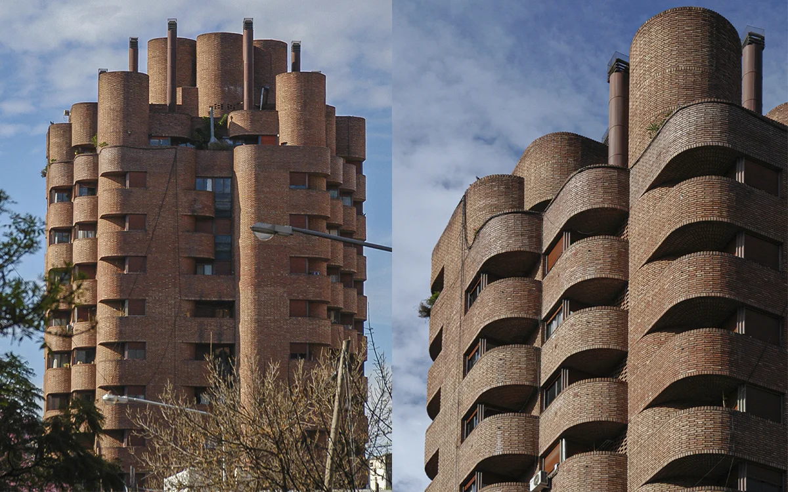
Referencias cultas
Eladio Dieste · "Togo" Díaz · Rogelio Salmona — Torres del Parque.
La luz nunca es neutral. El color nunca es solo decoración.
Trata la luz como material de diseño, no como efecto.
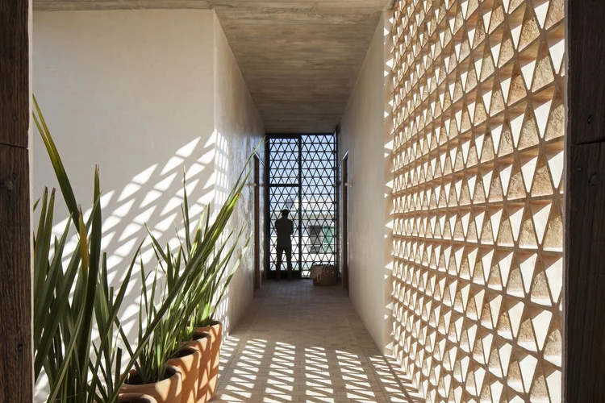
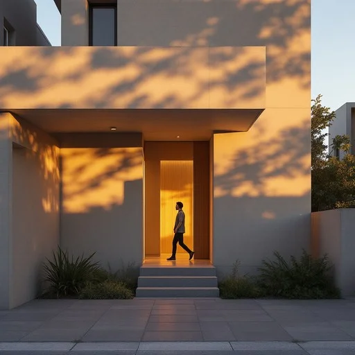
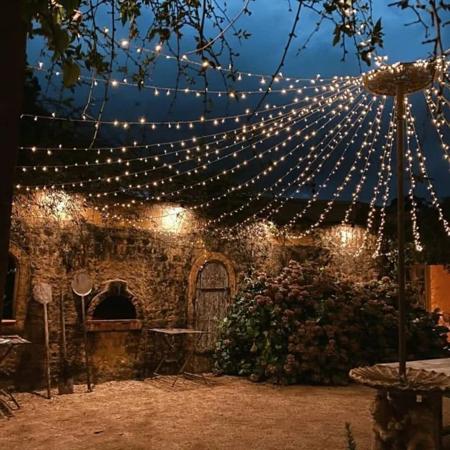
Barragán y su cromática radical, la Casa Azul de Frida, los cerros de Valparaíso. La artesanía como principio: textura hecha a mano, con variación e imperfección. Nunca la superficie industrial perfecta.
Leer la tesis completa →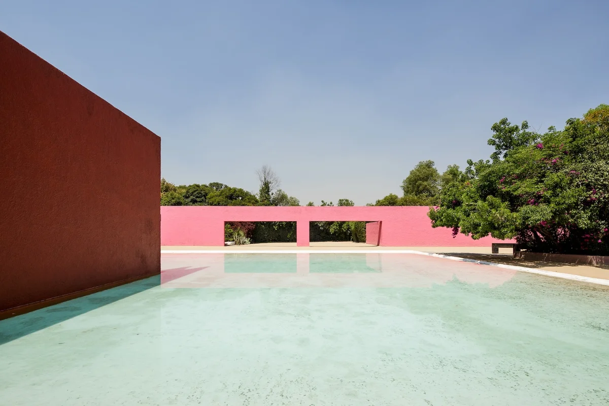
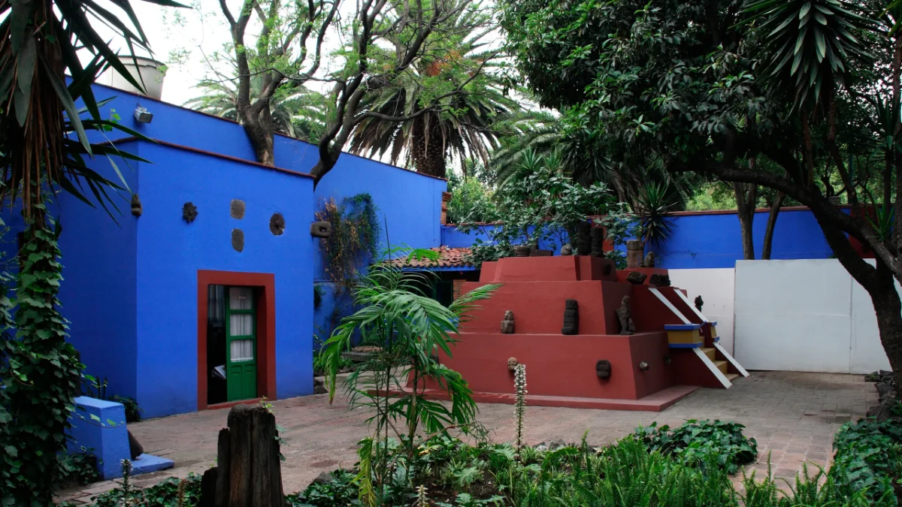
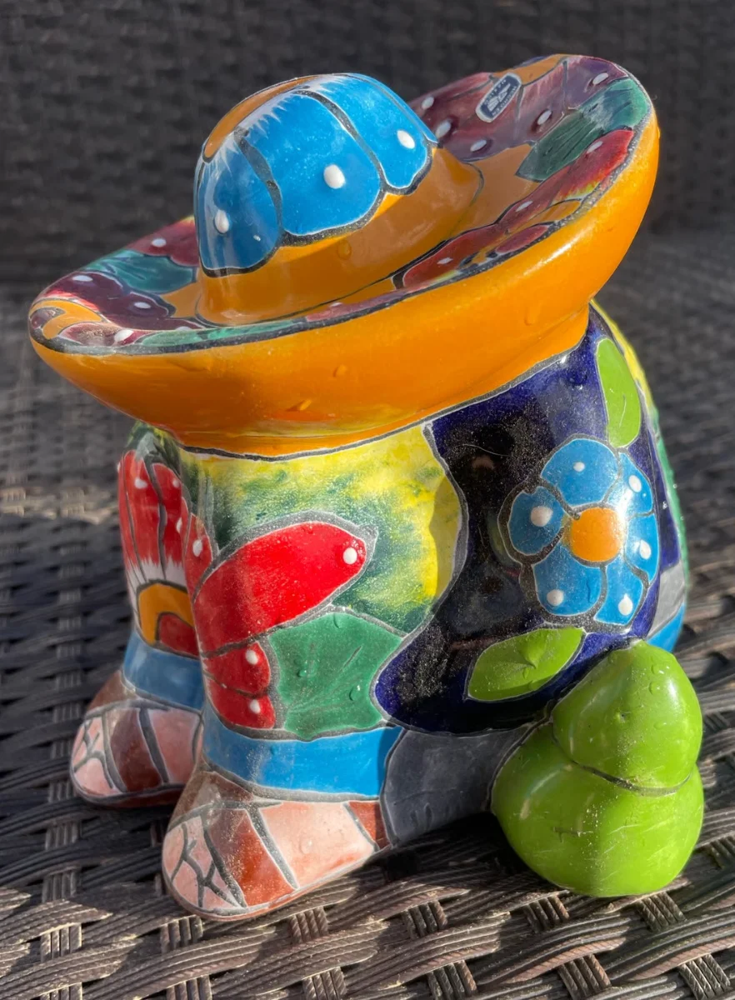
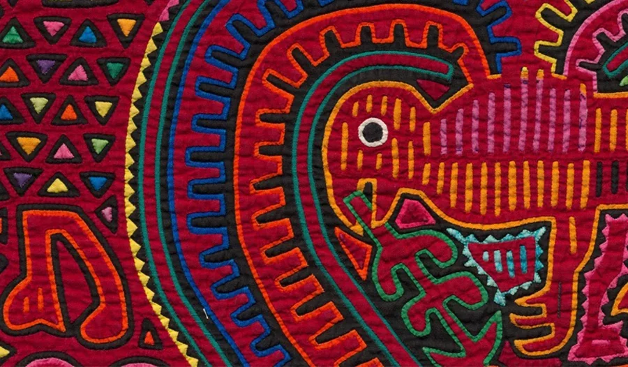
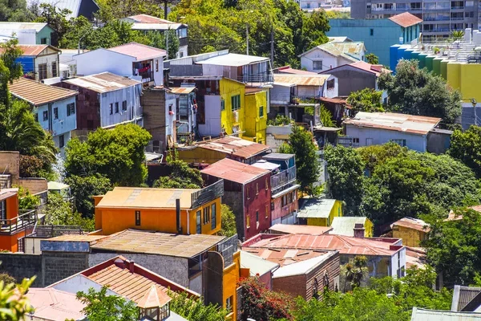
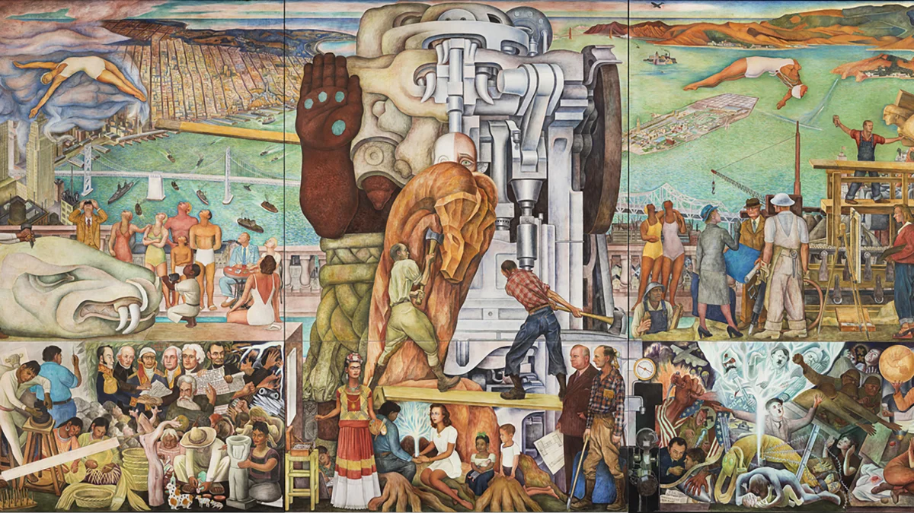
El corazón fresco de la casa latinoamericana: el vacío central, el agua y la sombra pensados como un solo sistema. Del atrio romano y el jardín persa a los patios de Granada, Cartagena y Arequipa.
Leer el ensayo · Sombra, agua y patio →Cuatro ensayos del Arq. Orelio Martínez, con fuentes, capítulos y descarga en PDF. Cada uno lleva el motivo de su tema: greca, talavera, chakana y rombos de telar.
El bloque, el tolete y el tabique: el idioma con que construimos nuestras casas.
La luz nunca es neutral y el color nunca es solo decoración.
Historia, clima, cultura y economía de una arquitectura propia.
El vacío central, el agua y la sombra como un solo sistema.
No es una versión defectuosa de estéticas ajenas: es una expresión propia, coherente y legítima. Más honesto y más productivo que la imitación de modelos ajenos.
La textura no es decoración: es protección. El alero no es ornamento: es sombra.